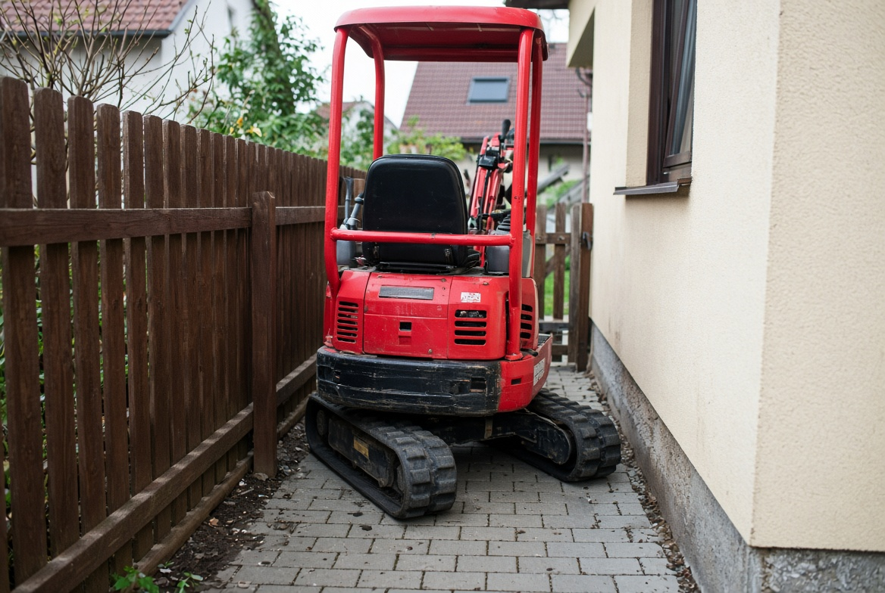
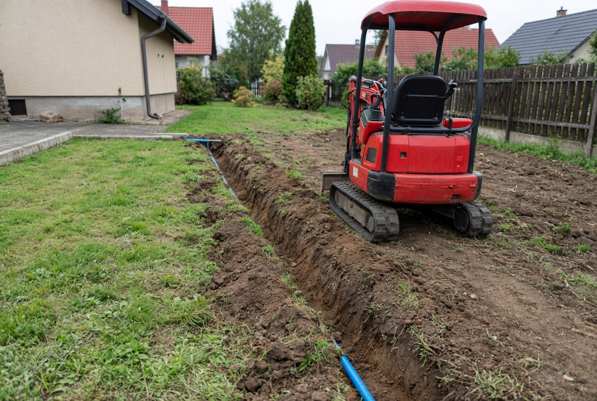
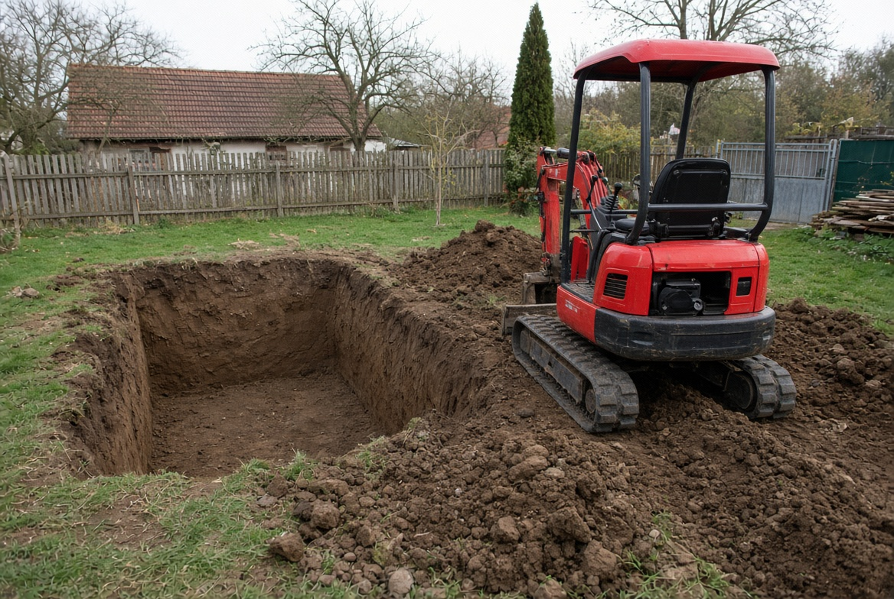

Výkopy minibagrem na Sázavsku a do 40 km od Sázavy. Projedu brankou tam, kde velký bagr nemá šanci — a zahradu ani dlažbu vám nezničím.
Voda, kanalizace, plyn i elektro — od hranice pozemku až k domu.
Výkop jámy na míru nádrže, obsyp i zásyp po usazení.
Odvedení vody od základů, aby vám nevlhly zdi ani sklep.
Jáma pro bazén nebo jezírko přesně podle rozměrů a hloubky.
Pásy pod garáž, pergolu, kůlnu i patky pod plotové sloupky.
Srovnání pozemku, svahování, rozhrnutí zeminy po stavbě.
Sejmutí drnu, výkop a srovnání pláně pod chodník či příjezd.
Odvezu přebytečnou zeminu, přivezu štěrk, písek nebo ornici.

Výběr z hotových zakázek. Fotek přibývá s každou další prací.


Orientační ceny jsou tady schválně — ať nemusíte volat kvůli tomu, abyste zjistili, jestli si to vůbec můžete dovolit. Přesnou částku dohodneme podle terénu a rozsahu.
| Minibagr s obsluhou1,5 t, včetně nafty | od [CENA] Kč/hod |
| Doprava strojeDle vzdálenosti od Sázavy | od [CENA] Kč |
| Přípojky, jímky, bazényPodle rozsahu a terénu | cena dohodou |
| Minimální zakázkaKvůli dopravě stroje | půl dne |
Bydlím na Sázavsku a kopu tady sám na sebe. Žádná firma s dispečinkem — telefon zvedám já a k vám přijedu taky já.
Začínám, takže si každou zakázku hlídám dvakrát: přijedu, na kdy se domluvíme, cenu neměním v půlce práce a po sobě uklidím. Když něco nejde nebo se to nevyplatí, řeknu to na rovinu.
Stroj mám vlastní, dopravu taky.
Nejste na seznamu? Zavolejte stejně — pokud to jde ujet, domluvíme se.
„S Ionutem je výborná domluva, na čem jsme se dohodli, to platilo. Díky.“
Volejte klidně po sedmé ráno i večer. Když to nezvednu, ozvu se do hodiny zpět.